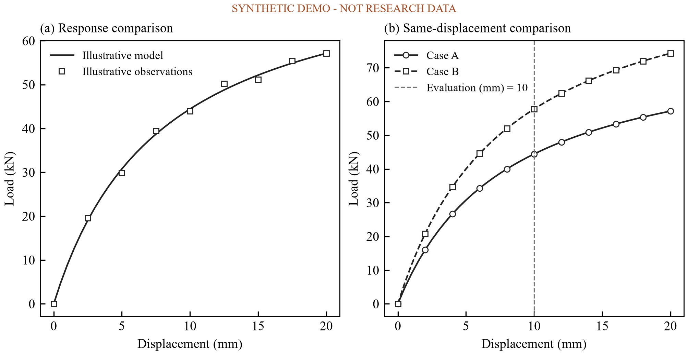
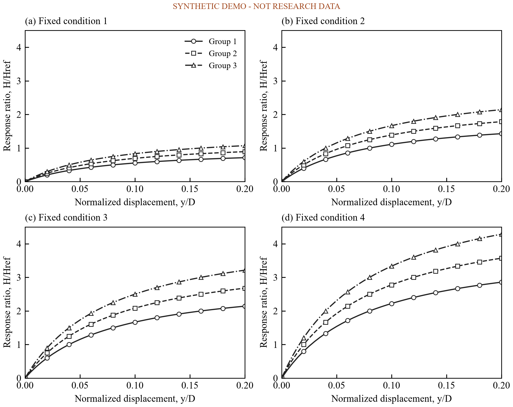
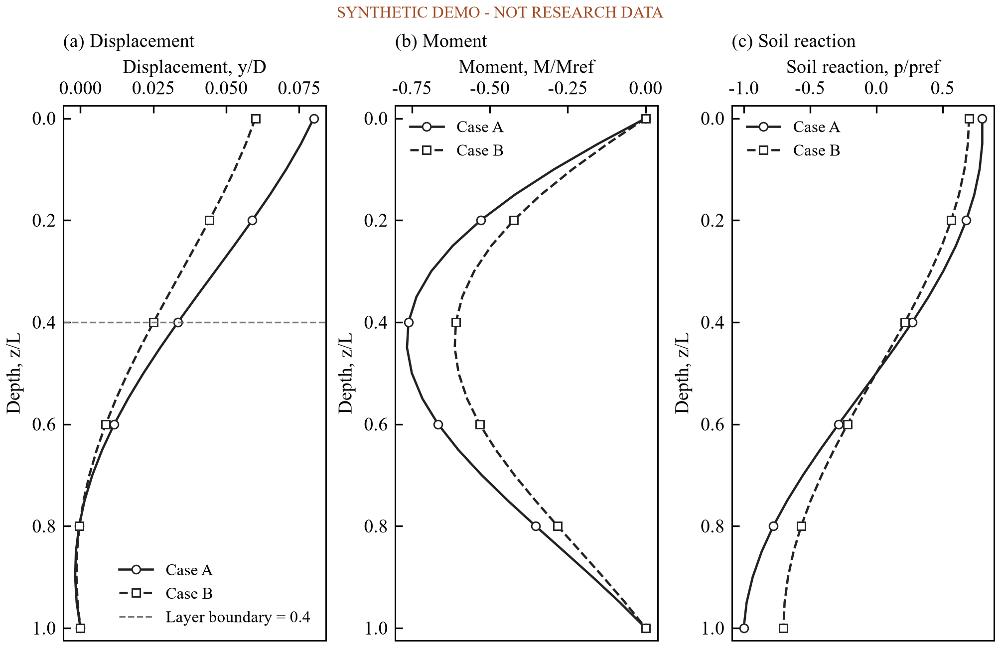
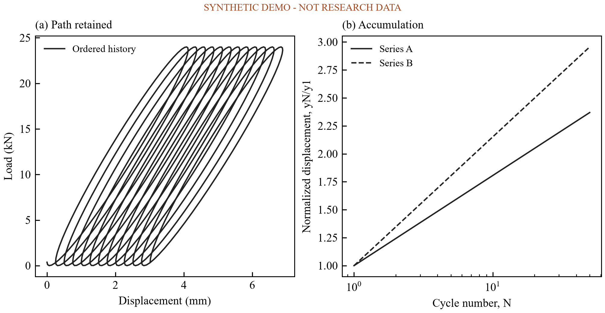
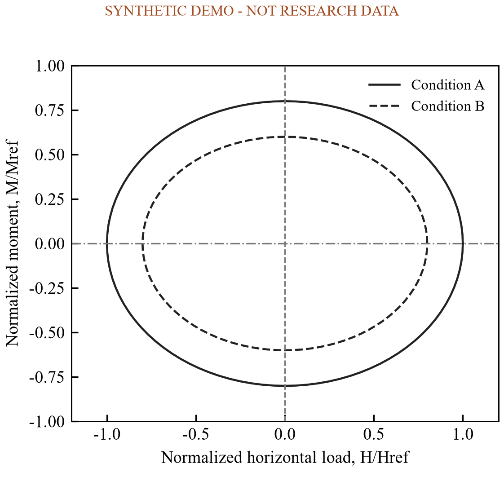
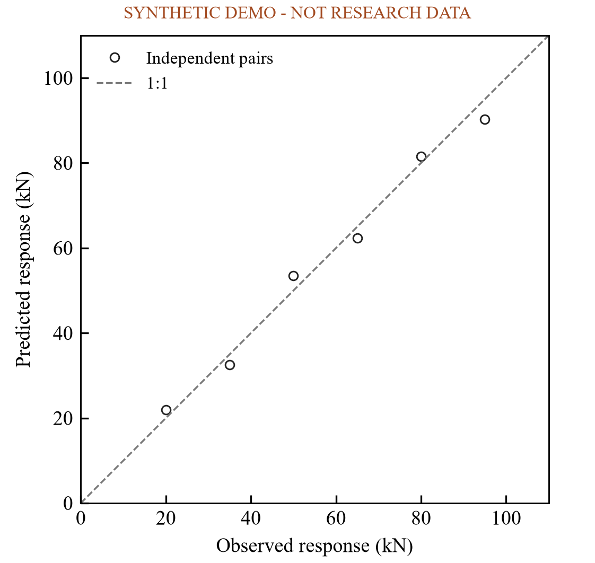
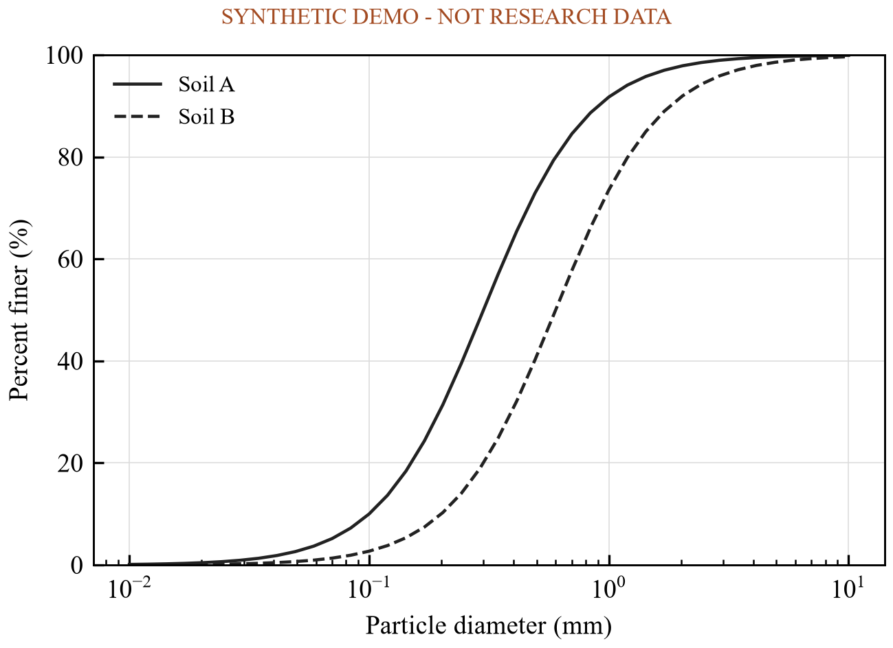
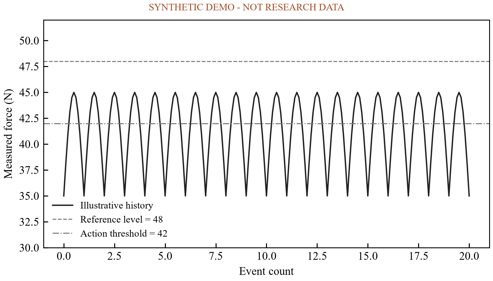
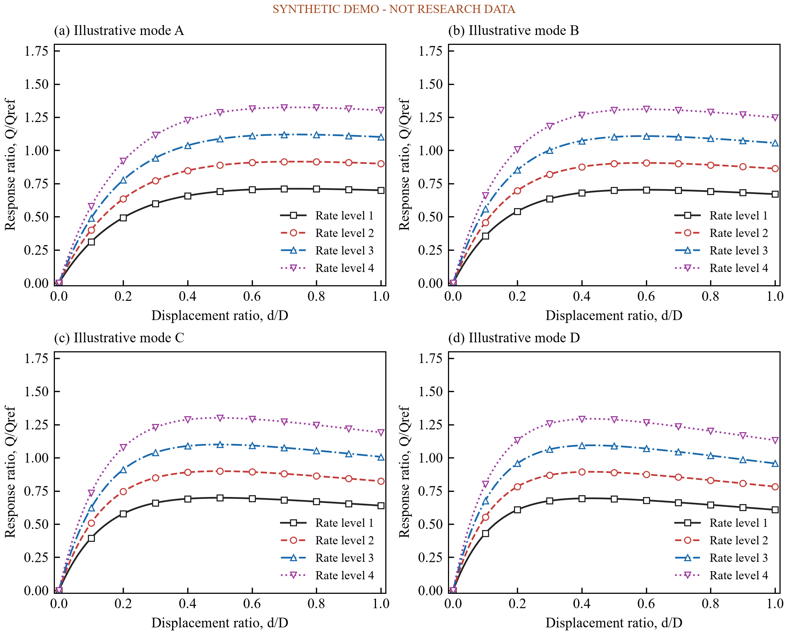
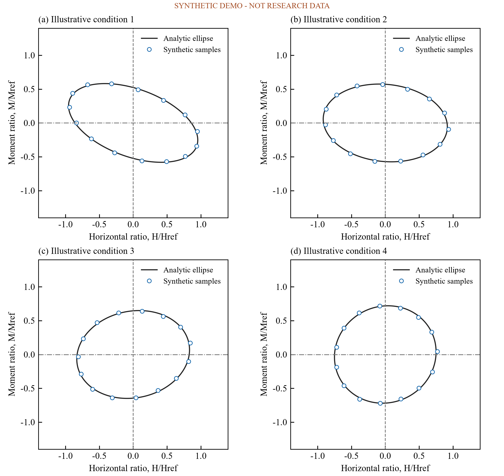

岩土论文图表模板TEMPLATE LIBRARY · 演示数据岩土论文图表模板
10 个图样（8 种 kind）与 8 类空表模板。
借鉴文献中的比较方式、坐标组织与图例编码。这里的曲线均为合成演示数据，不是论文原始数据或有限元结果。替换数据前，请阅读数据契约并确认单位、测点和归一化基准。
查看八类表格模板 · 图型与文献依据
响应与验证

可编辑输入 JSON · 矢量 SVG
参数分面

可编辑输入 JSON · 矢量 SVG
沿深度剖面

可编辑输入 JSON · 矢量 SVG
循环路径与累积

可编辑输入 JSON · 矢量 SVG
相互作用包络

可编辑输入 JSON · 矢量 SVG
预测与观测

可编辑输入 JSON · 矢量 SVG
颗粒级配

可编辑输入 JSON · 矢量 SVG
过程与阈值

可编辑输入 JSON · 矢量 SVG
模式与速率矩阵

可编辑输入 JSON · 矢量 SVG
包络理论与样本对照

可编辑输入 JSON · 矢量 SVG